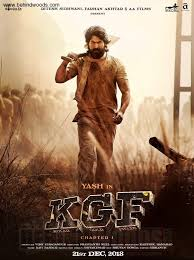

My favourite song of all time
SONG 1
SONG 2
SONG 3
SONG 4
TOP 4 most watched indian film trailers on youtube
-
Salaar Part 1 Ceasefire -:View : 113.2million & BOX OFFICE COLLECTION :₹700 crore

About:Salaar: Part 1 - Ceasefire is a 2023 Indian Telugu-language epic neo-noir action thriller film directed by Prashanth Neel and produced by Vijay Kiragandur under Hombale Films. The film stars Prabhas in the titular role, alongside an ensemble cast of Prithviraj Sukumaran, Shruti Haasan, Jagapathi Babu, Bobby Simha, Sriya Reddy, Ramachandra Raju, John Vijay, Easwari Rao, Tinnu Anand, Devaraj, Brahmaji and Mime Gopi. In the fictional dystopian city-state of Khansaar, where monarchy still exists, the film follows the friendship between Deva (Prabhas), the exiled prince of Khansaar, and Varadha (Prithviraj Sukumaran), the current prince of Khansaar. When a coup d'état is planned by his father's ministers and his relatives, Varadha enlists Deva's help to become Khansaar's undisputed ruler.
-
HiNaana- View : 97.6 million& BOX OFFICE COLLECTION : 75 CRORE

About:Hi Nanna is a 2023 Indian Telugu-language romantic drama film directed by Shouryuv, in his directoral debut, and produced by Vyra Entertainments. The film stars Nani and Mrunal Thakur in lead roles alongside Kiara Khanna, Jayaram and Priyadarshi Pulikonda. The music is composed by Hesham Abdul Wahab. The plot follows six-year-old Mahi, a girl battling cystic fibrosis, who lives with her loving father, Viraj. Her quest to learn about her absent mother leads to a chance encounter with Yashna, a woman unknowingly connected to her past, unraveling a heartfelt story of lost memories, love, and destiny.
-
KGF -View : 135.7 million& BOX OFFICE COLLECTION : ₹1200 crore
About:KGFis an Indian Kannada-language period action film series set mostly in the Kolar Gold Fields, which gives the series its name, created by Prashanth Neel and produced by Hombale Films starring Yash in lead role with an ensemble supporting cast.[6] Set in the late 1970s and early 1980s, the series follows two narrators, Anand Ingalangi and his son Vijayendra Ingalangi, who give an interview of a book written by Anand to a leading news channel, which tells the life story of Raja Krishnappa Bairya alias Rocky (Yash), a Mumbai-based high ranking mercenary born in poverty, and how he became the most dreaded person at that time.
-
8 Vasanatalu - View : 70.6 million & BOX OFFICE COLLECTION : 95 crore
About:8 Vasantalu (transl.Eight seasons) is a 2025 Indian Telugu-language coming-of-age romantic drama film written and directed by Phanindra Narsetti, and produced by Mythri Movie Makers.[1] The film features Ananthika Sanilkumar, Hanu Reddy and Raviteja Duggirala in leading roles.[2] 8 Vasantalu was released in theatres on 20 June 2025 and received positive reviews from critics.